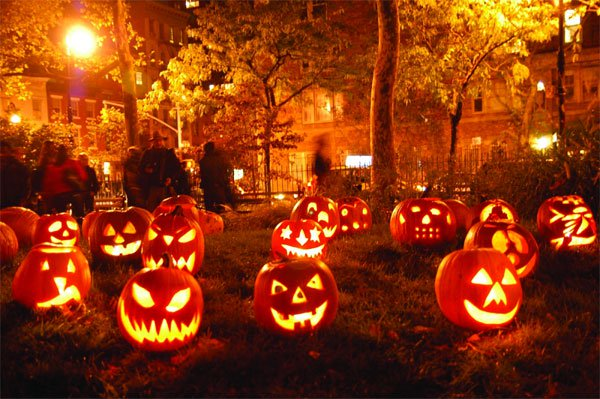

Truyền thuyết về Lễ hội Halloween
Lễ hội Halloween - Lễ hội Hóa trang - là lễ hội thường được tổ chức vào cuối tháng 10, đầu tháng 11 ở nhiều nơi trên thế giới. Nguồn gốc của lễ hội này còn rất nhiều tranh cãi, nhưng có một số truyền thuyết được lưu truyền cho đến ngày hôm nay.
-
Truyền thuyết thứ nhất của người Ireland kể rằng: Vào đêm cuối cùng của năm cũ (đối với
người Ireland cổ
đại
ngày 31/10 là ngày cuối cùng của năm cũ và ngày 1/11 là ngày đầu của năm mới) là ngày âm
dương giao hòa,
các
linh hồn được phép quay trở lại thăm trần gian.

Theo truyền thuyết, họ tin rằng, những linh hồn xấu sẽ tìm cách nhập vào cơ thể người sống để tái sinh. Chính vì lẽ đó, vào đêm này, người dân sẽ dập tắt hết lửa để những linh hồn không thể tìm được họ, thêm nữa họ ăn mặc, trang điểm, đeo mặt nạ cực kỳ xấu xí, kinh dị, diễu hành qua các con phố, khua chiêng, gõ trống để xua đuổi. -
Truyền thuyết thứ hai kể rằng: Xưa kia, ở vùng đất Ireland có một chàng trai xấu xa, keo
kiệt, bủn xỉn
tên
là Jack. Anh ta không muốn chơi với bất cứ ai vì sợ họ nhòm ngó của cải, tiền bạc của mình,
dân làng
cũng
chẳng ai muốn chơi với anh ta
Truyền thuyết thứ hai kể rằng: Xưa kia, ở vùng đất Ireland có một chàng trai xấu xa, keo kiệt, bủn xỉn tên là Jack. Anh ta không muốn chơi với bất cứ ai vì sợ họ nhòm ngó của cải, tiền bạc của mình, dân làng cũng chẳng ai muốn chơi với anh ta.
Jack chỉ có một người bạn là một con quỷ trông coi địa ngục, hai tên này thường chơi đùa với nhau vào những đêm trăng thanh, gió mát.
Một hôm, trong lúc con quỷ kia đang đi quấy nhiễu, phá phách làng xóm, nó bị các pháp sư bắt được và giam giữ. Jack đã phát hiện và tìm cách giải thoát cho con quỷ. Để trả ơn, con quỷ hứa sẽ không bắt linh hồn của Jack xuống địa ngục.
Khi Jack chết, linh hồn xấu xa của anh ta không được thiên đường chấp nhận, địa ngục cũng chẳng đón tiếp linh hồn của anh vì lời hứa năm xưa. Jack đành phải lang thang cô khổ trên thế gian lạnh lẽo.
Quỷ thấy tội nghiệp Jack mới lấy một quả bí ngô, lấy hết ruột, cho một ít than hồng vào trong và khoét vài cái lỗ để duy trì lửa cháy sưởi ấm cho Jack trong hành trình lang thang vô định của anh ta trên thế gian. Bên cạnh đó cũng có truyền thuyết khác nữa.
Sang đến thế kỷ XVIII, XIX, khi những người Ireland nhập cư vào Mỹ, họ đã mang theo Lễ hội này với những truyền thuyết, tập tục truyền thống của mình.
Sau một thời gian dài hòa trộn, tiếp biến và lan tỏa, Lễ hội Halloween trở thành một lễ hội đặc sắc với những trò chơi nổi tiếng như “trick or treat" (nghĩa là: Nếu muốn chúng tôi không chơi xấu thì hãy đãi chúng tôi cái gì đi), “apple bobbing” (ăn táo nổi).